CSS 学习
1.语法
1.1 CSS的三大特性
层叠性；后面的覆盖前面定义的（以最后的定义为准）
继承性；子标签会继承父标签的某些样式（跟文字相关的一般会继承，块级元素一般不继承）
优先级：默认样式<标签选择器<类选择器<id选择器<行内样式<!important
2.CSS 基础选择器
2.1 CSS 选择器的作用
选择器(选择符)就是根据不同需求把不同的标签选出来这就是选择器的作用。 简单来说，就是选择标签用的。
2.2 选择器分类
选择器分为基础选择器和复合选择器两个大类，我们这里先讲解一下基础选择器。
基础选择器是由单个选择器组成的
基础选择器又包括：标签选择器、类选择器、id 选择器和通配符选择器
2.3 标签选择器
标签选择器（元素选择器）是指用 HTML 标签名称作为选择器，按标签名称分类，为页面中某一类标签指定统一的 CSS 样式
作用
标签选择器可以把某一类标签全部选择出来，比如所有的
优点
能快速为页面中同类型的标签统一设置样式。
缺点
不能设计差异化样式，只能选择全部的当前标签。
2.4 类选择器
如果想要差异化选择不同的标签，单独选一个或者某几个标签，可以使用类选择器,
类选择器在 HTML 中以 class 属性表示，在 CSS 中，类选择器以一个点==.==号显示。
注意
① 类选择器使用“.”（英文点号）进行标识，后面紧跟类名（自定义，我们自己命名的）。
② 可以理解为给这个标签起了一个名字，来表示。
③ 长名称或词组可以使用中横线来为选择器命名。
④ 不要使用纯数字、中文等命名，尽量使用英文字母来表示。
⑤ 命名要有意义，尽量使别人一眼就知道这个类名的目的。
记忆口诀：样式点定义，结构类调用。一个或多个，开发最常用
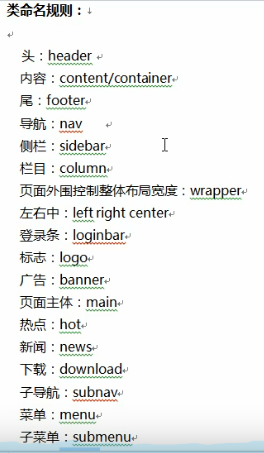
多类名选择器
我们可以给标签指定多个类名，从而达到更多的选择目的。
2.5 id 选择器
HTML 元素以 id 属性来设置 id 选择器，CSS 中 id 选择器以“#” 来定义。
==id选择器和类选择器的区别==
在同一个页面，不允许有相同名字的ID对象出现，但是允许出现相同名字的class。
2.6 通配符选择器
在 CSS 中，通配符选择器使用“*”定义，它表示选取页面中所有元素（标签）。
3. CSS 字体属性
3.1 font-family
指定文本的字体（按照顺序取,直到取到第一个有效的值）
div {font-family: Arial,”Microsoft Yahei”, “微软雅黑”;}
3.2 font-size
- 指定文本的字体大小(px:像素，em 一个字的宽度(1em一个汉字的宽度))
- 谷歌浏览器默认的文字大小为16px
3.3 font-weight
设置文本的粗细（b和Strong标签；范围（100-900）；400=normal；700=bold）
3.4 font-style
指定文本的字体样式。(normal正常的；intalic字体倾斜，oblique（不常用）)
3.5 字体复合属性
1 | body { |
3.6 font-variant
设置小型大写字母的字体显示文本，这意味着所有的小写字母均会被转换为大写，但是所有使用小型大写字体的字母与其余文本相比，其字体尺寸更小。
4. CSS 文本属性
4.1 color
颜色 :color:rgba(0,0,0,0.5) 四个参数，最后参数表示透明度
4.2 text-align
指定元素文本的水平对齐方式。(左对齐，居中对齐，右对齐)
4.3 text-decoration
规定添加到文本的修饰，下划线、上划线、删除线等。（可去除连接的下划线）
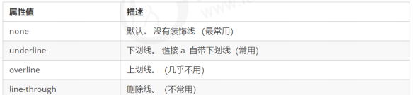
4.4 text-indent
定文本块中首行文本的缩进(使用em做单位，1em表示一个字的宽度)
em 是一个相对单位，就是当前元素（font-size) 1 个文字的大小, 如果当前元素没有设置大小，则会按照父元素的 1 个文字大小
4.5 line-height
行间距（可设置文字居中对齐）
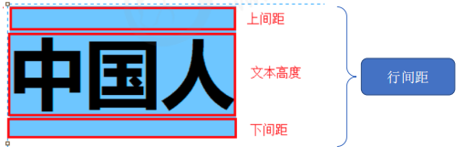
4.6 letter-spacing
字间距
4.7 word-spacing
单词间距（中文无效）
4.8 direction
设置文本方向。
4.9 text-shadow
文字阴影:水平位置 垂直距离 模糊距离 阴影颜色
4.10.text-transform
控制文本的大小写。
4.11 word-break:换行
- break-all;单词内换行（允许单词拆开显示）
- keep-all:不允许拆开单词显示（默认，连字符特殊）
4.12 white-space
设置或检索对象文本的显示方式，通常用于一行强制显示内容
- normal：默认
- nowrap: 不允许换行，
4.13 text-overflow
文字溢出（必须强制一行内显示，其次必须有over-flow:hidden）
- clip；裁剪
- ellipsis:超出部分 省略号代替
4.14 文字阴影
在 CSS3 中，我们可以使用 text-shadow 属性将阴影应用于文本。
1 | text-shadow: h-shadow v-shadow blur color; |
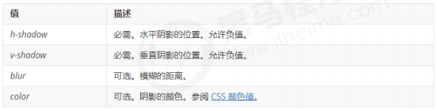
5. CSS 引入方式
5.1 CSS 的三种样式表
行内样式表（行内式）
内部样式表（嵌入式）
外部样式表（链接式）
5.2 内部样式表
内部样式表（内嵌样式表）是写到html页面内部. 是将所有的 CSS 代码抽取出来，单独放到一个 <style> 标签中。
1 | <style> |
5.3 行内样式表
行内样式表（内联样式表）是在元素标签内部的 style 属性中设定 CSS 样式。适合于修改简单样式
5.4 外部样式表
实际开发都是外部样式表. 适合于样式比较多的情况. 核心是:样式单独写到CSS 文件中，之后把CSS文件引入
到 HTML 页面中使用.
引入外部样式表分为两步
新建一个后缀名为 .css 的样式文件，把所有 CSS 代码都放入此文件中。
在 HTML 页面中，使用 标签引入这个文件
1 | <link rel="stylesheet" href="css文件路径"> |
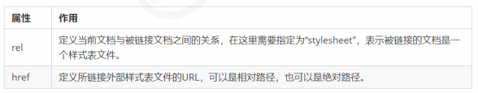
- 使用外部样式表设定 CSS，通常也被称为外链式或链接式引入，这种方式是开发中常用的方式
6 Emmet 语法
Emmet语法的前身是Zen coding,它使用缩写,来提高html/css的编写速度,Vscode内部已经集成该语法.
6.1 快速生成HTML结构语法
生成标签 直接输入标签名 按tab键即可 比如 div 然后tab 键， 就可以生成 <div></div>
如果想要生成多个相同标签 加上 * 就可以了 比如 div*3 就可以快速生成3个div
如果有父子级关系的标签，可以用 > 比如 ul > li就可以了
如果有兄弟关系的标签，用 + 就可以了 比如 div+p
如果生成带有类名或者id名字的， 直接写 .demo 或者 #two tab 键就可以了
如果生成的div 类名是有顺序的， 可以用 自增符号 $
如果想要在生成的标签内部写内容可以用 { } 表示
6.2 快速生成CSS样式语法
6.3 快速格式化代码
7 CSS 的复合选择器
7.1 什么是复合选择器
在 CSS 中，可以根据选择器的类型把选择器分为基础选择器和复合选择器，复合选择器是建立在基础选择器之上，对基本选择器进行组合形成的。
7.2 后代选择器 (重要）
后代选择器又称为包含选择器，可以选择父元素里面子元素。其写法就是把外层标签写在前面，内层标签写在后面，中间用空格分隔。当标签发生嵌套时，内层标签就成为外层标签的后代。
1 | ul li { 样式声明 } /* 选择 ul 里面所有的 li标签元素 */ |
7.3 子选择器 (重要）
子元素选择器（子选择器）只能选择作为某元素的最近一级子元素。简单理解就是选亲儿子元素.
1 | div > p { 样式声明 } /* 选择 div 里面所有最近一级 p 标签元素 */ |
7.4 并集选择器 (重要）
并集选择器可以选择多组标签, 同时为他们定义相同的样式。通常用于集体声明
并集选择器是各选择器通过英文逗号（,）连接而成，任何形式的选择器都可以作为并集选择器的一部分。
1 | ul,div { 样式声明 } /* 选择 ul 和 div标签元素 */ |
7.5 伪类选择器
伪类选择器用于向某些选择器添加特殊的效果，比如给链接添加特殊效果，或选择第1个，第n个元素。
伪类选择器书写最大的特点是用冒号（:）表示，比如 :hover 、 :first-child 。
7.6 链接伪类选择器
- :link 未访问的链接
- :visited 已访问的链接
- :hover 鼠标移动到链接上
- :active 选定的链接，鼠标I点击之后松开的状态
1 | a:hover { |
==为了确保生效，请按照 LVHA 的循顺序声明 :link－:visited－:hover－:active==
7.7 :focus 伪类选择器
:focus 伪类选择器用于选取获得焦点的表单元素
焦点就是光标，一般情况 <input> 类表单元素才能获取，因此这个选择器也主要针对于表单元素来说。
1 | input:focus { |
8 CSS 的元素显示模式
8.1 什么是元素显示模式
元素显示模式就是元素（标签）以什么方式进行显示，比如<div>自己占一行，比如一行可以放多个<span>。
HTML 元素一般分为块元素和行内元素两种类型
8.2 块元素
常见的块元素有<h1>~<h6>、<p>、<div>、<ul>、<ol>、<li>等，其中 <div> 标签是最典型的块元素。
① 比较霸道，自己独占一行。
② 高度，宽度、外边距以及内边距都可以控制。
③ 宽度默认是容器（父级宽度）的100%。
④ 是一个容器及盒子，里面可以放行内或者块级元素。
注意：
文字类的元素内不能使用块级元素
< p> 标签主要用于存放文字，因此 <p> 里面不能放块级元素，特别是不能放<div>
同理， <h1>~<h6>等都是文字类块级标签，里面也不能放其他块级元素
8.3 行内元素
常见的行内元素有 <a>、<strong>、<b>、<em>、<i>、<del>、<s>、<ins>、<u>、<span>等，其中 <span> 标签是最典型的行内元素。有的地方也将行内元素称为内联元素
行内元素的特点：
① 相邻行内元素在一行上，一行可以显示多个。
② 高、宽直接设置是无效的。
③ 默认宽度就是它本身内容的宽度。
④ 行内元素只能容纳文本或其他行内元素。
注意：
链接里面不能再放链接
特殊情况链接 <a> 里面可以放块级元素，但是给 <a> 转换一下块级模式最安全
8.4 行内块元素
在行内元素中有几个特殊的标签 ——<img/>、<input />、<td>，它们同时具有块元素和行内元素的特点。
① 和相邻行内元素（行内块）在一行上，但是他们之间会有空白缝隙。一行可以显示多个（行内元素特点）。
② 默认宽度就是它本身内容的宽度（行内元素特点）。
③ 高度，行高、外边距以及内边距都可以控制（块级元素特点）。
8.5 元素显示模式总结
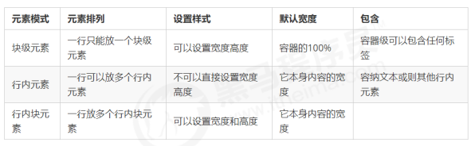
8.6 元素显示模式转换
显示模式转换 display
inline;块级标签转换为行内标签
block;将行内元素转换为块级标签
inline-block:行内元素转换为行内块元素
9 CSS 的背景
9.1 background-color
一般情况下元素背景颜色默认值是 transparent（透明），我们也可以手动指定背景颜色为透明色。
9.2 background-image （css3可以添加多背景）
属性描述了元素的背景图像.
9.3 background-repeat 图像 - 水平或垂直平铺
- repeat:背景图像在纵向和横向上平铺（默认的）
- no-repeat:背景图像不平铺
- repeat-x:背景图像在横向上平铺
- repeat-y:背景图像在纵向平铺
9.4 background-position
1 | background-position: x y; |
参数代表的意思是：x 坐标和 y 坐标。 可以使用 方位名词 或者 精确单位
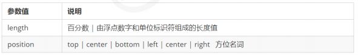
==可以设置图片居中显示，使得完整显示==
9.5 background-attachment
背景图像是否固定或者随着页面的其余部分滚动。
默认是：sroll 滚动的
fixed 背景是固定的
9.6 背景半透明
background：(0,0,0,0.5)
最后一个参数是 alpha 透明度，取值范围在 0~1之间
9.7 背景缩放
backgroung-size:宽度 高度（指定一个参数，另一个等比例缩放）
cover:满足最短的边
contain：满足最长边
9.8 多长背景图片，用逗号分隔，背景加在最后一组上
10 css的3大特性
10.1 层叠性
多种css的样式叠加，如果冲突以最后一个为主
10.2 继承性
子标签会继承父标签的某些样式，如文本的颜色和字号
10.3 优先级
!important 最大的优先级
!important>行内样式 style > ID选择器 > 类选择器。伪类选择器 > 元素选择器 > 继承或 *
11 盒子模型
11.1 看透网页布局的本质
页面布局要学习三大核心, 盒子模型, 浮动 和 定位. 学习好盒子模型能非常好的帮助我们布局页面.
11.2 盒子模型（Box Model）组成
所谓 盒子模型：就是把 HTML 页面中的布局元素看作是一个矩形的盒子，也就是一个盛装内容的容器。
CSS 盒子模型本质上是一个盒子，封装周围的 HTML 元素，它包括：边框、外边距、内边距、和 实际内容
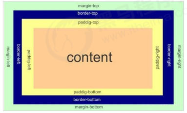
11.3 边框（border）
1 | border : border-width || border-style || border-color |
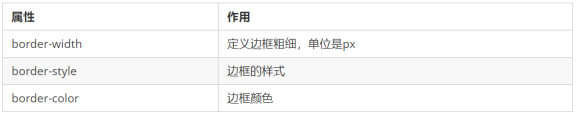
边框样式 border-style 可以设置如下值：
- none：没有边框即忽略所有边框的宽度（默认值）
- solid：边框为单实线(最为常用的)
- dashed：边框为虚线
- dotted：边框为点线
圆角边框：border-radius
11.4 表格的细线边框
border-collapse 属性控制浏览器绘制表格边框的方式。它控制相邻单元格的边框
1 | border-collapse:collapse; |
collapse 单词是合并的意思
border-collapse: collapse; 表示相邻边框合并在一起
11.5 边框会影响盒子实际大小
边框会额外增加盒子的实际大小。因此我们有两种方案解决
测量盒子大小的时候,不量边框.
如果测量的时候包含了边框,则需要 width/height 减去边框宽度
11.6 内边距（padding）
padding 属性用于设置内边距，即边框与内容之间的距离
padding 属性（简写属性）可以有一到四个值。
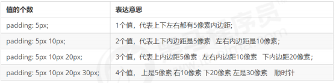
如何盒子本身没有指定width/height属性, 则此时padding不会撑开盒子大小
11.7 外边距（margin）
margin 属性用于设置外边距，即控制盒子和盒子之间的距离。
外边距可以让块级盒子水平居中，但是必须满足两个条件
① 盒子必须指定了宽度（width）。
② 盒子左右的外边距都设置为 auto
注意：以上方法是让块级元素水平居中，行内元素或者行内块元素水平居中给其父元素添加 text-align:center 即可。
11.8 外边距合并
使用 margin 定义块元素的垂直外边距时，可能会出现外边距的合并。
主要有两种情况:
1. 相邻块元素垂直外边距的合并
当上下相邻的两个块元素（兄弟关系）相遇时，如果上面的元素有下外边距 margin-bottom，下面的元素有
上外边距 margin-top ，则他们之间的垂直间距不是 margin-bottom 与 margin-top 之和。取两个值中的
较大者这种现象被称为==相邻块元素垂直外边距的合并==。
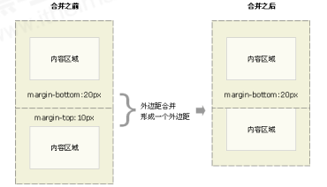
解决方案：
==尽量只给一个盒子添加 margin 值。==
2. 嵌套块元素垂直外边距的塌陷
对于两个嵌套关系（父子关系）的块元素，父元素有上外边距同时子元素也有上外边距，此时父元素会塌陷较大的外边距值。
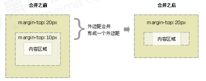
解决方案：
① 可以为父元素定义上边框。
② 可以为父元素定义上内边距。
③ 可以为父元素添加 overflow:hidden。
11.9 清除内外边距
网页元素很多都带有默认的内外边距，而且不同浏览器默认的也不一致。因此我们在布局前，首先要清除下网
页元素的内外边距。
1 | * { |
11.12 圆角边框(CSS3)
==FANCY-BORDER_RADIUS==:可以拖拽设置 边框的 样式，灵活使用；
在 CSS3 中，新增了圆角边框样式，这样我们的盒子就可以变圆角了。
1 | border-radius:length; |
参数值可以为数值或百分比的形式
如果是正方形，想要设置为一个圆，把数值修改为高度或者宽度的一半即可，或者直接写为 50%
该属性是一个简写属性，可以跟四个值，分别代表左上角、右上角、右下角、左下角
分开写：border-top-left-radius、border-top-right-radius、border-bottom-right-radius 和
border-bottom-left-radius
- 兼容性 ie9+ 浏览器支持, 但是不会影响页面布局,可以放心使用.
11.13 盒子阴影(CSS3)
CSS3 中新增了盒子阴影，我们可以使用 box-shadow 属性为盒子添加阴影。
1 | box-shadow: h-shadow v-shadow blur spread color inset; |
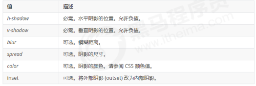
12 浮动（float)
12.1 传统网页布局的三种方式
网页布局的本质——用 CSS 来摆放盒子。 把盒子摆放到相应位置.
CSS 提供了三种传统布局方式(简单说,就是盒子如何进行排列顺序)：
普通流（标准流）
浮动
定位
12.2 标准流（普通流/文档流）
- 块级元素会独占一行，从上向下顺序排列。
- 常用元素：div、hr、p、h1~h6、ul、ol、dl、form、table
- 行内元素会按照顺序，从左到右顺序排列，碰到父元素边缘则自动换行。
- 常用元素：span、a、i、em 等
以上都是标准流布局，我们前面学习的就是标准流，标准流是最基本的布局方式。
这三种布局方式都是用来摆放盒子的，盒子摆放到合适位置，布局自然就完成了。
12.3 为什么需要浮动？
总结： 有很多的布局效果，标准流没有办法完成，此时就可以利用浮动完成布局。 因为浮动可以改变元素标
签默认的排列方式
浮动最典型的应用：可以让多个块级元素一行内排列显示。
网页布局第一准则：==多个块级元素纵向排列找标准流，多个块级元素横向排列找浮动。==
12.4 什么是浮动？
float 属性用于创建浮动框，将其移动到一边，直到左边缘或右边缘触及包含块或另一个浮动框的边缘。
1 | 选择器 { float: 属性值; } |
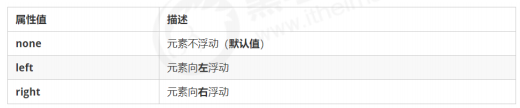
12.5 浮动特性（重难点）
加了浮动之后的元素,会具有很多特性,需要我们掌握的.
脱离标准普通流的控制（浮） 移动到指定位置（动）, （俗称脱标）
浮动的盒子不再保留原先的位置
如果多个盒子都设置了浮动，则它们会按照属性值一行内显示并且顶端对齐排列。
浮动元素会具有行内块元素特性。
12.6 浮动元素经常和标准流父级搭配使用
==先用标准流的父元素排列上下位置, 之后内部子元素采取浮动排列左右位置. 符合网页布局第一准侧==
13 清除浮动
13.1 为什么需要清除浮动？
由于父级盒子很多情况下，不方便给高度，但是子盒子浮动又不占有位置，最后父级盒子高度为 0 时，就会
影响下面的标准流盒子。
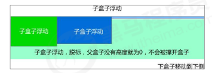
13.2 清除浮动本质
清除浮动的本质是清除浮动元素造成的影响
如果父盒子本身有高度，则不需要清除浮动
清除浮动之后，父级就会根据浮动的子盒子自动检测高度。父级有了高度，就不会影响下面的标准流了
13.3 清除浮动
1 | 选择器{clear:属性值;} |
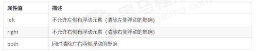
我们实际工作中， 几乎只用 clear: both;
==清除浮动的策略是: 闭合浮动==
1.额外标签法 也称为隔墙法，是 W3C 推荐的做法。
额外标签法会在浮动元素末尾添加一个空的标签。例如
，优点： 通俗易懂，书写方便
缺点： 添加许多无意义的标签，结构化较差
==注意： 要求这个新的空标签必须是块级元素。==
2.父级添加 overflow 属性
可以给父级添加 overflow(溢出隐藏) 属性，将其属性值设置为 hidden、 auto 或 scroll 。
子不教,父之过,注意是给父元素添加代码
优点：代码简洁
缺点：无法显示溢出的部分
3.父级添加after伪元素
4.父级添加双伪元素
14 CSS 属性书写顺序(重点)
建议遵循以下顺序：
布局定位属性：display / position / float / clear / visibility / overflow（建议 display 第一个写，毕竟关系到模式）
自身属性：width / height / margin / padding / border / background
文本属性：color / font / text-decoration / text-align / vertical-align / white- space / break-word
其他属性（CSS3）：content / cursor / border-radius / box-shadow / text-shadow / background:linear-gradient …
15 定位
15.1 定位组成
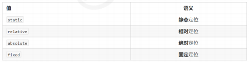
15.2 边偏移
边偏移就是定位的盒子移动到最终位置。有 top、bottom、left 和 right 4 个属性。
15.3 静态定位 static（了解）
静态定位是元素的默认定位方式，无定位的意思。
1 | 选择器 { position: static; } |
静态定位按照标准流特性摆放位置，它没有边偏移
静态定位在布局时很少用到
15.4 相对定位 relative（重要）
==相对定位==是元素在移动位置的时候，是相对于它原来的位置来说的（自恋型）
1 | 选择器 { position: relative; } |
相对定位的特点：（务必记住）
它是相对于自己原来的位置来移动的（移动位置的时候参照点是自己原来的位置）。
原来在标准流的位置继续占有，后面的盒子仍然以标准流的方式对待它。
因此，相对定位并没有脱标。它最典型的应用是给绝对定位当爹的。。。
15.5 绝对定位 absolute（重要）
绝对定位是元素在移动位置的时候，是相对于它祖先元素来说的（拼爹型）。
1 | 选择器 { position: absolute; } |
绝对定位的特点：（务必记住）
如果没有祖先元素或者祖先元素没有定位，则以浏览器为准定位（Document 文档）。
如果祖先元素有定位（相对、绝对、固定定位），则以最近一级的有定位祖先元素为参考点移动位置。
绝对定位不再占有原先的位置。（脱标）
所以绝对定位是脱离标准流的
15.6 子绝父相的由来
==子级是绝对定位的话，父级要用相对定位。==
① 子级绝对定位，不会占有位置，可以放到父盒子里面的任何一个地方，不会影响其他的兄弟盒子。
② 父盒子需要加定位限制子盒子在父盒子内显示。
③ 父盒子布局时，需要占有位置，因此父亲只能是相对定位。
15.7 固定定位 fixed （重要）
固定定位是元素固定于浏览器可视区的位置。主要使用场景： 可以在浏览器页面滚动时元素的位置不会改变。
语法：
1 | 选择器 { position: fixed; } |
固定定位的特点：（务必记住）
以浏览器的可视窗口为参照点移动元素。
- 跟父元素没有任何关系
- 不随滚动条滚动。
固定定位不在占有原先的位置。
固定定位也是脱标的，其实固定定位也可以看做是一种特殊的绝对定位。
固定定位小技巧： 固定在版心右侧位置。
小算法：
让固定定位的盒子 left: 50%. 走到浏览器可视区（也可以看做版心） 的一半位置。
让固定定位的盒子 margin-left: 版心宽度的一半距离。 多走 版心宽度的一半位置
15.8 粘性定位 sticky（了解）
粘性定位可以被认为是相对定位和固定定位的混合。 Sticky 粘性的
1 | 选择器 { position: sticky; top: 10px; } |
粘性定位的特点：
以浏览器的可视窗口为参照点移动元素（固定定位特点）
粘性定位占有原先的位置（相对定位特点）
必须添加 top 、left、right、bottom 其中一个才有效
跟页面滚动搭配使用。 兼容性较差，IE 不支持。
15.9 定位叠放次序 z-index
在使用定位布局时，可能会出现盒子重叠的情况。此时，可以使用 z-index 来控制盒子的前后次序 (z轴)
数值可以是正整数、负整数或 0, 默认是 auto，数值越大，盒子越靠上
如果属性值相同，则按照书写顺序，后来居上
数字后面不能加单位
只有定位的盒子才有 z-index 属性
16 元素的显示与隐藏
让一个元素在页面中隐藏或者显示出来。
display 显示隐藏
visibility 显示隐藏
overflow 溢出显示隐藏
16.1 display 属性
display 属性用于设置一个元素应如何显示。
display: none ；隐藏对象
display：block ；除了转换为块级元素之外，同时还有显示元素的意思
display 隐藏元素后，不再占有原来的位置
16.2 visibility 可见性
visibility 属性用于指定一个元素应可见还是隐藏。
visibility：visible ; 元素可视
visibility：hidden; 元素隐藏
visibility 隐藏元素后，继续占有原来的位置
16.3 overflow 溢出
overflow 属性指定了如果内容溢出一个元素的框（超过其指定高度及宽度） 时，会发生什么。
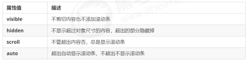
一般情况下，我们都不想让溢出的内容显示出来，因为溢出的部分会影响布局。
但是如果有定位的盒子， 请慎用overflow:hidden 因为它会隐藏多余的部分。
17 css 尺寸
17.1 height
设置元素的高度。
17.2 width
设置元素的宽度。
17.3 line-height
设置行高。
17.4 max-height
设置元素的最大高度。
17.5 max-width
设置元素的最大宽度。
17.6 min-height
设置元素的最小高度。
17.7 min-width
设置元素的最小宽度。

.png)